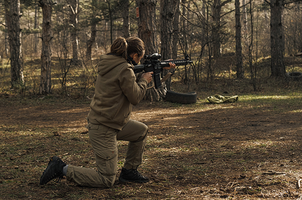
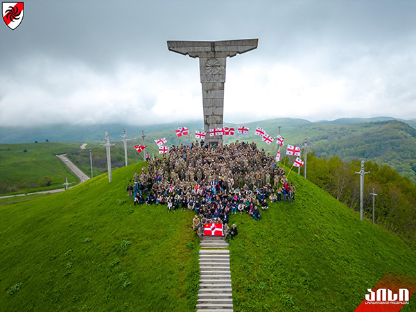
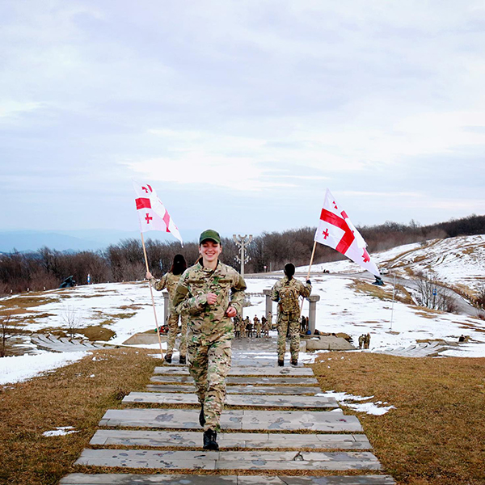
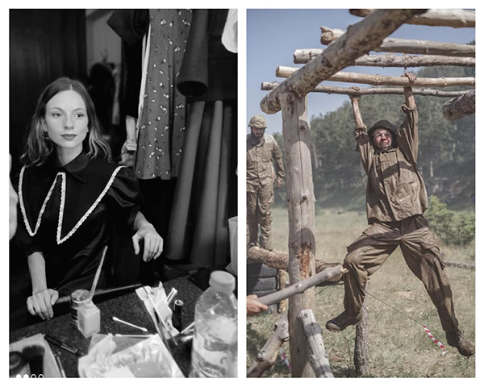
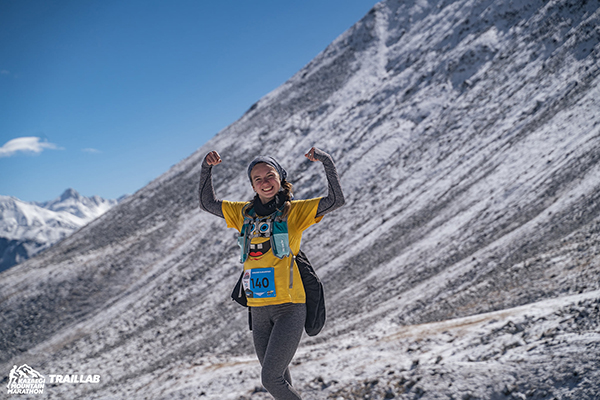
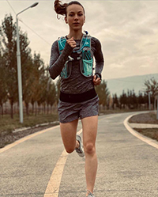
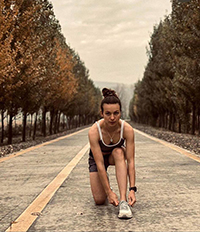
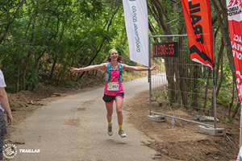
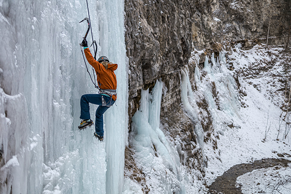
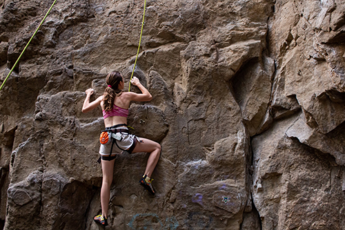

ქეთევან მუმლაძე(დავიბადე 1999 წლის 17 ივლისს) პროფესიით ვარ მსახიობი და ფიტნეს ინსტრუქტორი.
დამთავრებული მაქვს თეატრისა და კინოს სახელმწიფო უნივერსიტეტის ბაკალავრი. 6 თვიანი კურსი მაქვს გავლილი ფიტნეს ინდუსტრიაში და ვარ სერთიფიცირებული პერსონალური ფიტნეს ინსტრუქტორი.
ასევე კურსები მაქვს გავლილი digital bus academy - ში, სადაც გავიარე სოციალური მედია.
ამჟამად ვცხოვრობ გერმანიაში.
➊ 2021-ში ვმუშაობდი ფიტნეს დარბაზ წრე - ში, დარბაზის და პერსონალურ ინსტრუქტორად და ასევე ვატარებდი სპინინგის ჯგუფურ ვარჯიშებს.
➋ 2022-ში ვმუშაობდი Academy of digital industries - ში, ტიკ-ტოკ კონტენტ კრეატორად.
➌ ამჟამად(2023) ვმუშაობ გერმანიის Amazon-ში სორტერად, ასევე ვმუშაობ ონლაინ, ვარ ონლაინ ფიტნეს ქოუჩი და მყავს მოსწავლეები.
✺ აქტიურად ვარ ჩართული საქველმოქმედო ორგანიზაციებში.
☢ გაწევრიანებული ვარ არასამთავრობო საზოგადოებრივი ორგანიზაცია აისი - ში. (ეს არის საბაზისო სამხედრო-სალაშქრო მომზადების კურსები. ეს არის აპოლიტიკური საზოგადოებრივი ორგანიზაცია, რომელიც შეიქმნა 2008 წლის ომის შემდეგ, სწორედ ეს ომი იყო მიზეზი ორგანიზაციის ჩამოყალიბების. ამ კურსზე თეორიულ მასალასთან ერთად, პრაქტიკული სავარჯიშოებიცაა. კურსზე ისწავლება: ნავიგაცია, ტოპოგრაფიის საფუძვლები (რუკის კითხვა), ადგილზე ორიენტირება, თვითგადარჩენის საშუალებები, პირველადი სამედიცინო დახმარება, იარაღის თეორიული შესწავლა, შეიარაღების ნომენკლატურა, სალაშქრო აღჭურვილობის სპეციფიკა, საბანაკე ადგილის შერჩევა და ა.შ.)
   ► სირბილი ჩემი ცხოვრების განუყოფელი ნაწილია. ხშირად გამოვდივარ მარათონებზე. ასევე აქტიურად ვარ ჩართული სამთო სირბილში.
მიღწევები: ნახევარ მარათონის(21კმ) მეორე ადგილის მფლობელი სამთო სირბილში.
გავირბინე 24კმ(ამაღლება: 1000მ) სამთო სირბილი




► ერთ-ერთი ჰობია ცოცვა. ვცდილობ ბევრი გამოცდილება დავაგროვო ამ სპორტში და მაქსიმალურად სიამოვნება მივიღო იმ ადრენალინით, რაც ცოცვას ახლავს.
 ◈ ამჟამად გავდივარ front-end development-ის კურს IT Step Academy - ში.
◈ Instagram-ზე მაქვს მოგზაურობის და ფიტნესის კონტენტი და აქტიურად ვიღებ ვლოგებს.